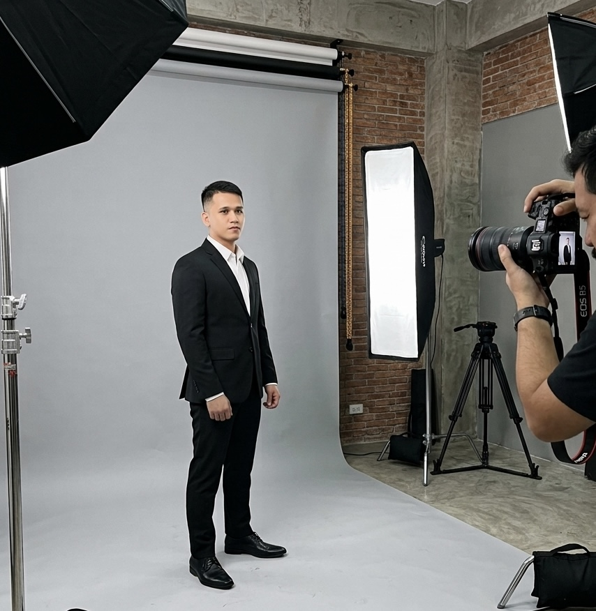

Multi‑skilled · Always adapting

Ralph Calilong
Virtual Assistant
I'm Ralph, known as the "Swiss Army Knife" of the Altitude team. As a Virtual Assistant, I don't just check boxes; I solve problems. Years of hands-on experience in customer service and technical support have taught me that every challenge is really just an opportunity wearing a disguise.
The nickname fits because, like a Swiss Army knife, I come equipped with a whole set of different tools, except mine are skills instead of blades. Even when a task is completely new to me, I dig in, find a way to solve it, and learn what I need along the way, adding another tool to my set in the process. That means I can move fluidly between the complex and the everyday: writing code one moment, building out a spreadsheet the next, then putting together a polished PowerPoint, organizing a messy project, editing a video, or designing graphics. Whatever the task requires, I've got a tool for it, or I'll build one.
I run on three core principles: never settle until there's a real resolution, bring creativity to every single task, no matter how small, and exceed expectations, every time, no exceptions. Whether it's untangling a tricky technical issue or finding a smarter way to get things done, I show up ready to adapt and deliver.
But I don't stop learning when the workday ends. I'm constantly sharpening my skills, diving into educational videos, cracking open books, and hunting down new knowledge that keeps me one step ahead. For me, growth isn't optional; it's the whole point.
In fact, the very website you're reading this on right now? I built that from scratch too, proof that this Swiss Army knife is always ready for the next challenge.